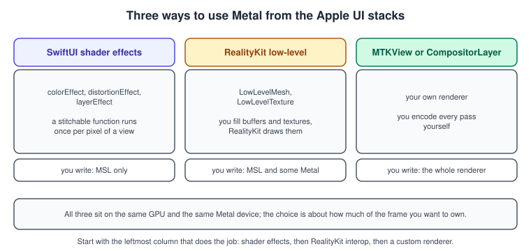
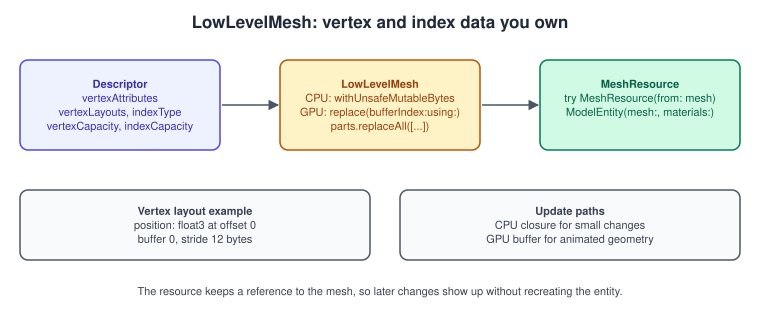
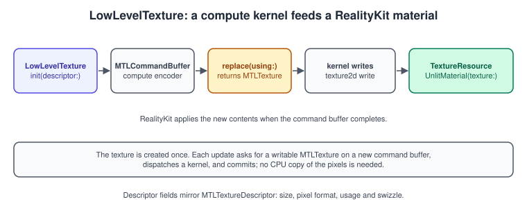

SwiftUI Shaders and RealityKit Interop
|
This content was generated with the assistance of AI and should be verified against the official documentation before being relied on in production. |
Not every use of Metal is a renderer. Sometimes you want one view to shimmer, or a RealityKit entity to deform, and writing a whole frame loop for that would be absurd. Apple’s higher-level frameworks have two doors into Metal for exactly these cases: SwiftUI shader effects, where a small MSL function runs once per pixel of a view, and RealityKit’s low-level mesh and texture types, where you own the vertex buffers and pixels and RealityKit draws them. This page is short on purpose: it points to the existing SwiftUI coverage and shows the two RealityKit types with code that compiles against the documented APIs.
The general concepts behind this page are in Entity Component System.
The facts were checked in November 2026. The versions documented are SwiftUI shaders (iOS 17, macOS 14, visionOS 1 and later) and
RealityKit LowLevelMesh and LowLevelTexture (iOS 18, macOS 15, visionOS 2 and tvOS 26 and later), built with Xcode 27 and Swift
6.4, using MSL for the shader and compute functions. Everything runs on any device that supports these OS versions; the
Simulator is enough for the SwiftUI part, and a device is the reliable place to judge the RealityKit GPU updates.
In the running example, the SwiftUI part makes the book covers of the app’s menu shimmer, and the RealityKit part builds a book cover mesh and a lamp-light texture for the visionOS version.

SwiftUI shader effects
The mechanism, the three modifiers and two full examples (paperGrain and waterRipple) are already documented in the
section Metal Shader Effects of the SwiftUI
drawing page, and are not repeated here. In short: a function marked [[ stitchable ]] in a .metal file of the app target
is looked up by name through ShaderLibrary, turned into a Shader with its arguments, and attached to a view with one of three modifiers.
| Modifier | What the shader computes | Required MSL signature |
|---|---|---|
|
A new colour for each pixel from its own colour. |
|
|
A new position to read each pixel from (geometric distortion). |
|
|
A new colour for each pixel, sampling the rasterised view anywhere. |
|
The Shader struct exists from iOS 17, macOS 14 and visionOS 1. The notes that follow add what the other page leaves out.
Arguments
The arguments after the required parameters are Shader.Argument values. They map to MSL types like this:
| Swift | MSL parameter |
|---|---|
|
|
|
|
|
|
|
|
|
|
|
|
|
|
|
|
.boundingRect is the way to get a position relative to the view: subtract the origin and divide by the size.
An example: foil sheen on a book cover
// BookShaders.metal, in the app target
#include <metal_stdlib>
using namespace metal;
// A bright diagonal band that slides across the view, like foil catching a light.
[[ stitchable ]] half4 foilSheen(float2 position, half4 color, float4 bounds, float phase)
{
float2 uv = (position - bounds.xy) / bounds.zw; // 0 to 1 across the view
float d = abs(fract(uv.x * 0.7 + uv.y * 0.3 - phase) - 0.5);
float sheen = smoothstep(0.08, 0.0, d); // 1 at the centre of the band
// The colour is premultiplied, so scale the added light by alpha.
return half4(color.rgb + half(sheen * 0.35) * color.a, color.a);
}import SwiftUI
struct BookCover: View {
var body: some View {
TimelineView(.animation) { timeline in
let seconds = timeline.date.timeIntervalSinceReferenceDate
let phase = seconds.truncatingRemainder(dividingBy: 4) / 4 // one sweep every 4 s
RoundedRectangle(cornerRadius: 8)
.fill(Color(red: 0.45, green: 0.2, blue: 0.12))
.overlay(Text("Metal").font(.title.bold()).foregroundStyle(.white))
.frame(width: 140, height: 200)
.colorEffect(ShaderLibrary.foilSheen(.boundingRect, .float(phase)))
}
}
}
#Preview { BookCover().padding() }Pitfalls and performance
-
maxSampleOffsetis required fordistortionEffectandlayerEffectwhenever the shader reads away fromposition. It is the maximum distance on each axis for all pixels; a value that is too small clips the effect. ThelayerEffectshader includes<SwiftUI/SwiftUI.h>forSwiftUI::Layer, andlayer.sample(position)returns a linearly filtered premultiplied pixel. -
Views backed by AppKit or UIKit may not render into the filtered layer; SwiftUI then logs a warning and shows a placeholder.
-
Only one
.imageargument is supported perShader. For several textures, pack them in an atlas. -
Shader.compile(as:)is an asynchronous call that compiles the shader before first use so the first frame does not stall; use it when an effect appears with an animation.dithersColoradds noise to the returned colours instead of rounding them, which hides banding in smooth gradients. -
A shader runs for every pixel of the view, every frame it changes. Keep it cheap, enable it only where it is visible (
isEnabled) and preferhalfprecision, as in Performance Best Practices.
RealityKit: LowLevelMesh and LowLevelTexture
RealityKit draws entities with its own renderer. LowLevelMesh and LowLevelTexture let you supply the data that renderer
reads. They are @MainActor classes, and the data can be written from the CPU or from a Metal compute kernel running on the
GPU; the resource keeps a reference to the low-level object, so later changes show up on screen without recreating the entity.
LowLevelMesh
A LowLevelMesh is created from a LowLevelMesh.Descriptor that says which vertex attributes exist, how they are laid out in
buffers, and how many vertices and indices it can hold.

The pieces:
-
Descriptor.vertexAttributes: an array ofLowLevelMesh.Attribute, each with asemantic(such as.position), aformatand anoffsetin the vertex. -
Descriptor.vertexLayouts: an array ofLowLevelMesh.Layout, each with abufferIndexand abufferStride. -
Descriptor.indexType,vertexCapacityandindexCapacity. -
parts: the ranges of primitives to draw, each aLowLevelMesh.Partwith an index count, a topology and bounds. Replace them withparts.replaceAll(newParts); a part also carries a material index. -
CPU access:
withUnsafeMutableBytes(bufferIndex:_:)andwithUnsafeMutableIndices(_:)(and read-only variants). -
GPU access:
replace(bufferIndex:using:)andreplaceIndices(using:)take a Metal command buffer and return anMTLBufferthat your kernels write;read(bufferIndex:using:)andreadIndices(using:)return a buffer for reading. -
MeshResource(from:)makes the RealityKit resource that aModelEntityuses.
import RealityKit
import SwiftUI
/// A flat book cover: 4 vertices, 2 triangles, positions only.
@MainActor
func makeCoverMesh() throws -> LowLevelMesh {
var descriptor = LowLevelMesh.Descriptor()
descriptor.vertexAttributes = [
.init(semantic: .position, format: .float3, offset: 0)
]
descriptor.vertexLayouts = [
.init(bufferIndex: 0, bufferStride: MemoryLayout<SIMD3<Float>>.stride)
]
descriptor.indexType = .uint32
descriptor.vertexCapacity = 4
descriptor.indexCapacity = 6
let mesh = try LowLevelMesh(descriptor: descriptor)
mesh.withUnsafeMutableBytes(bufferIndex: 0) { raw in
let v = raw.bindMemory(to: SIMD3<Float>.self)
v[0] = [-0.1, 0.0, 0]
v[1] = [ 0.1, 0.0, 0]
v[2] = [ 0.1, 0.3, 0]
v[3] = [-0.1, 0.3, 0]
}
mesh.withUnsafeMutableIndices { raw in
let i = raw.bindMemory(to: UInt32.self)
i[0] = 0; i[1] = 1; i[2] = 2
i[3] = 0; i[4] = 2; i[5] = 3
}
let bounds = BoundingBox(min: [-0.1, 0.0, 0], max: [0.1, 0.3, 0])
mesh.parts.replaceAll([LowLevelMesh.Part(indexCount: 6, topology: .triangle, bounds: bounds)])
return mesh
}
struct CoverView: View {
var body: some View {
RealityView { content in
guard let mesh = try? makeCoverMesh(),
let resource = try? MeshResource(from: mesh) else { return }
let cover = ModelEntity(mesh: resource,
materials: [SimpleMaterial(color: .brown, isMetallic: false)])
content.add(cover)
}
}
}Source: RealityKit: LowLevelMesh
To animate the mesh on the GPU, ask the mesh for a writable buffer on your own command buffer, run a compute kernel over it and commit. RealityKit picks up the result when the command buffer completes.
// WaveKernel.metal
#include <metal_stdlib>
using namespace metal;
// Bends the cover like a page in a draft: z depends on height and time.
kernel void wave(device packed_float3 *positions [[buffer(0)]],
constant float &time [[buffer(1)]],
uint i [[thread_position_in_grid]])
{
float3 p = float3(positions[i]);
p.z = 0.02 * sin(10.0 * p.y + time) * p.y;
positions[i] = packed_float3(p);
}import Metal
import RealityKit
@MainActor
final class CoverAnimator {
private let device = MTLCreateSystemDefaultDevice()!
private lazy var queue = device.makeCommandQueue()!
private let pipeline: MTLComputePipelineState
init(shaderSource: String) throws {
let library = try device.makeLibrary(source: shaderSource, options: nil)
pipeline = try device.makeComputePipelineState(function: library.makeFunction(name: "wave")!)
}
func update(_ mesh: LowLevelMesh, time: Float) {
guard let commandBuffer = queue.makeCommandBuffer(),
let encoder = commandBuffer.makeComputeCommandEncoder() else { return }
commandBuffer.enqueue() // reserves the slot, as in Apple's sample
let vertices = mesh.replace(bufferIndex: 0, using: commandBuffer)
var time = time
encoder.setComputePipelineState(pipeline)
encoder.setBuffer(vertices, offset: 0, index: 0)
encoder.setBytes(&time, length: MemoryLayout<Float>.stride, index: 1)
encoder.dispatchThreads(MTLSize(width: mesh.vertexCapacity, height: 1, depth: 1),
threadsPerThreadgroup: MTLSize(width: min(mesh.vertexCapacity, 64), height: 1, depth: 1))
encoder.endEncoding()
commandBuffer.commit()
}
}Source: RealityKit: LowLevelMesh
The packed_float3 type matters: a Swift SIMD3<Float> in an array has a 16-byte stride, but the mesh above uses a 12-byte
stride, so the kernel must read three tightly packed floats. Always make the MSL type match the layout in the descriptor
(see Buffers and Vertex Descriptors).
LowLevelTexture
A LowLevelTexture is a texture whose contents you control. The LowLevelTexture.Descriptor is similar to an
MTLTextureDescriptor: textureType, arrayLength, width, height, depth, mipmapLevelCount, pixelFormat,
textureUsage and swizzle. replace(using:) returns an MTLTexture that your shaders can write; read() returns the current
texture for reading. TextureResource(from:) makes the RealityKit resource that materials use.

The example paints the pool of light of the desk lamp as a soft radial texture and shows it on a plane under the shelf.
import Metal
import RealityKit
import SwiftUI
private let lampKernel = """
#include <metal_stdlib>
using namespace metal;
kernel void lampPool(texture2d<half, access::write> out [[texture(0)]],
uint2 gid [[thread_position_in_grid]])
{
if (gid.x >= out.get_width() || gid.y >= out.get_height()) { return; }
float2 uv = (float2(gid) + 0.5) / float2(out.get_width(), out.get_height());
float d = length(uv - 0.5) * 2.0; // 0 at the centre, 1 at the edge
half glow = half(saturate(1.0 - d));
half3 warm = half3(1.0h, 0.78h, 0.45h) * glow;
out.write(half4(warm, glow), gid); // glow also drives alpha
}
"""
@MainActor
func makeLampTexture(device: MTLDevice, queue: MTLCommandQueue) throws -> LowLevelTexture {
var descriptor = LowLevelTexture.Descriptor()
descriptor.textureType = .type2D
descriptor.arrayLength = 1
descriptor.width = 512
descriptor.height = 512
descriptor.depth = 1
descriptor.mipmapLevelCount = 1
descriptor.pixelFormat = .bgra8Unorm
descriptor.textureUsage = [.shaderRead, .shaderWrite]
descriptor.swizzle = .init(red: .red, green: .green, blue: .blue, alpha: .alpha)
let texture = try LowLevelTexture(descriptor: descriptor)
let library = try device.makeLibrary(source: lampKernel, options: nil)
let pipeline = try device.makeComputePipelineState(function: library.makeFunction(name: "lampPool")!)
if let commandBuffer = queue.makeCommandBuffer(),
let encoder = commandBuffer.makeComputeCommandEncoder() {
commandBuffer.enqueue()
encoder.setComputePipelineState(pipeline)
encoder.setTexture(texture.replace(using: commandBuffer), index: 0)
encoder.dispatchThreads(MTLSize(width: 512, height: 512, depth: 1),
threadsPerThreadgroup: MTLSize(width: 16, height: 16, depth: 1))
encoder.endEncoding()
commandBuffer.commit()
}
return texture
}
struct LampView: View {
var body: some View {
RealityView { content in
guard let device = MTLCreateSystemDefaultDevice(),
let queue = device.makeCommandQueue(),
let texture = try? makeLampTexture(device: device, queue: queue),
let resource = try? TextureResource(from: texture) else { return }
var material = UnlitMaterial(texture: resource)
material.opacityThreshold = 0.05 // cut out the transparent corners
content.add(ModelEntity(mesh: .generatePlane(width: 0.6, depth: 0.6), materials: [material]))
}
}
}Source: RealityKit: LowLevelTexture
Notes: RealityKit applies the change when the command buffer you passed to replace(using:) completes, so there is no extra
synchronisation step. For a texture that changes every frame, call replace(using:) once per update with a new command buffer
and keep a single LowLevelTexture. For simple static textures use the TextureResource factory methods that take a CGImage
instead; a low-level texture pays off when the data is generated or changes often. Variants of the
initialiser and of replace that take a LowLevelDeviceResource also exist and are outside the scope of this page.
Which tool for which job
| Goal | Best fit | Why |
|---|---|---|
A shimmering, blurring or rippling view |
SwiftUI shader effect |
Per-pixel MSL and no Metal objects in your code. |
A procedurally deformed RealityKit mesh |
|
You own the vertex buffer; RealityKit keeps lighting, shadows and physics. |
A generated or video-like texture on an entity |
|
GPU compute writes the pixels; materials sample them. |
Your own lighting model, passes and post-processing |
|
Only a renderer you own controls the whole frame; see MetalKit, MTKView and SwiftUI and Metal on visionOS. |
Common mistakes
-
Forgetting
maxSampleOffset, or giving it a value smaller than the real sampling distance. -
Using
float3in MSL against a tightly packed 12-byte vertex; usepacked_float3. -
Declaring a
LowLevelMeshwith less capacity than the data you write, or replacingpartswith a larger index count thanindexCapacity. -
Updating RealityKit objects off the main actor:
LowLevelMeshandLowLevelTextureare main-actor classes. -
Creating a new
LowLevelTextureevery frame instead of replacing the contents of one. -
Expecting an
MTKViewrenderer’s depth buffer to be shared with RealityKit: they draw independently.
Performance notes
Shader effects cost fragment time on every pixel of the view, so scope them tightly. GPU updates of low-level meshes and textures run on the GPU timeline and scale with the data, not with the CPU; use them instead of rewriting vertices in a loop on the CPU for large meshes, and keep the kernel’s threadgroup size in line with the pipeline’s limits (Compute Kernels). Profile with a GPU capture on a device.
What changed compared with older guides
-
Metal by Tutorials (MBT) and the Metal Programming Guide (CLA) do not cover SwiftUI shaders (iOS 17) or RealityKit’s low-level types (iOS 18); the equivalent in older material was SceneKit shader modifiers and
SCNProgram. -
LowLevelMeshandLowLevelTextureappeared with iOS 18, macOS 15 and visionOS 2, and reached tvOS with version 26.
See also
-
Metal Shader Effects in the SwiftUI drawing page.